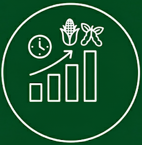

Repositorio en GitHub del Centro de Estudios y Servicios de la Bolsa de Comercio de Santa Fe

Margenes Agropecuarios
Complementa el análisis de la actividad económica y da a conocer en forma periódica la evolución de variables agropecuarias representativas de la región pampeana.
Ver ReporteEscrituras
Información suministrada por las dos circunscripciones del Colegio de Escribanos de la provincia de Santa Fe.
Ver ReportePanel de precio Commodities
Graficas e indices de precios de commodities y su desagregación
Ver PanelesVer Calendario
Mantente al tanto de las fechas de carga de series y los datos actuales
Leer Noticias